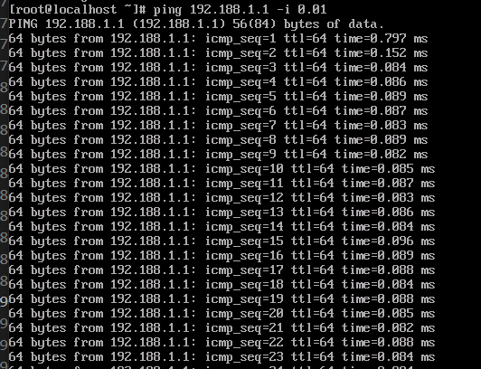
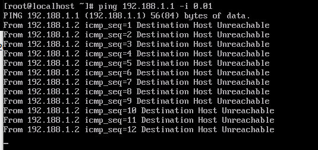

环境信息
1 | OS : CentOS Linux release 8.4.2105 |
dpdk-vdpa启动
1 | ./dpdk-vdpa -c 0x2 -n 4 --socket-mem 1024,1024 \ |
libvirt xml配置
1 | <domain type="kvm" xmlns:qemu='http://libvirt.org/schemas/domain/qemu/1.0'> |
验证结果
1、查看libvirt是否正常拉起vm
1 | # virsh -c qemu+tcp:///system create vm.xml |
2、ping测试

调试问题
使用libvirt拉起vm时，ping failed

定位过程
1、查看/var/log/libvirt/qemu/vm0.log日志，发现存在错误日志打印，可以看到qemu启动参数需要指定memory-backend-file
1 | 2023-06-14T01:53:51.897860Z qemu-system-x86_64: Failed initializing vhost-user memory map, consider using -object memory-backend-file share=on |
2、查看qemu启动进程参数，发现qemu参数指定的是memory-backend-ram
1 | root 6394 1 50 08:23 ? 00:00:47 /root/pc-bios/qemu-system-x86_64 -name guest=vm0,debug-threads=on -S -object {"qom-type":"secret","id":"masterKey0","format":"raw","file":"/var/lib/libvirt/qemu/domain-10-vm0/master-key.aes"} -machine pc-i440fx-2.1,usb=off,dump-guest-core=off,memory-backend=pc.ram -accel kvm -cpu kvm64,x2apic=on,hypervisor=on -m 2048 -object {"qom-type":"memory-backend-ram","id":"pc.ram","size":2147483648} -overcommit mem-lock=off -smp 2,sockets=2,cores=1,threads=1 -uuid d37f5411-b296-11ed-8e6c-0c48c6c879e4 -no-user-config -nodefaults -chardev socket,id=charmonitor,fd=38,server=on,wait=off -mon chardev=charmonitor,id=monitor,mode=control -rtc base=utc -no-shutdown -boot strict=on -device piix3-usb-uhci,id=usb,bus=pci.0,addr=0x1.0x2 -blockdev {"driver":"file","filename":"/mnt/store/vm0-centos8.4-8g-ext4-host-dmar.img","node-name":"libvirt-1-storage","auto-read-only":true,"discard":"unmap"} -blockdev {"node-name":"libvirt-1-format","read-only":false,"driver":"raw","file":"libvirt-1-storage"} -device ide-hd,bus=ide.0,unit=0,drive=libvirt-1-format,id=ide0-0-0,bootindex=1 -chardev socket,id=charnet0,path=/tmp/vdpa-socket0 -netdev vhost-user,chardev=charnet0,queues=4,id=hostnet0 -device virtio-net-pci,mq=on,vectors=10,rx_queue_size=512,tx_queue_size=512,netdev=hostnet0,id=net0,mac=00:aa:bb:cc:dd:ee,bus=pci.0,addr=0x3 -chardev socket,id=charserial0,host=127.0.0.1,port=4321,telnet=on,server=on,wait=off -device isa-serial,chardev=charserial0,id=serial0 -audiodev {"id":"audio1","driver":"none"} -vnc 0.0.0.0:0,audiodev=audio1 -device cirrus-vga,id=video0,bus=pci.0,addr=0x2 -device virtio-balloon-pci,id=balloon0,bus=pci.0,addr=0x4 -L /root/pc-bios -msg timestamp=on |
根因分析
qemu进程在ram_block初始化的时候根据memory-backend-xxx，其中xxx可以指定file、memfd、ram，
从而指定不同的内存申请方式
1 | host_memory_backend_memory_complete(UserCreatable *uc, Error **errp) |
当指定memory-backend-file
则bc->alloc = file_backend_memory_alloc
当指定memory-backend-ram
则bc->alloc = ram_backend_memory_alloc;
这两个主要的区别在于申请ram_block时，file_backend_memory_alloc会额外申请一个fd，用于前后端进程共享内存
1 | RAMBlock *qemu_ram_alloc_from_file(ram_addr_t size, MemoryRegion *mr, |
MemoryRegion通过vhost-user VHOST_USER_SET_MEM_TABLE消息传递到dpdk-vdpa进程
如果不指定memory-backend-file，VHOST_USER_SET_MEM_TABLE消息失败，在vhost_dev_start中返回失败，不会走后续设备启动流程
1 | int vhost_dev_start(struct vhost_dev *hdev, VirtIODevice *vdev) |
问题修复
libvirt xml指定memoryBacking类型为file
1 | <domain> |
此时再次启动vm，可以发现此时qemu进程启动参数为memory-backend-file
1 | root 17715 1 75 23:02 ? 00:00:47 /root/pc-bios/qemu-system-x86_64 -name guest=vm0,debug-threads=on -S -object {"qom-type":"secret","id":"masterKey0","format":"raw","file":"/var/lib/libvirt/qemu/domain-3-vm0/master-key.aes"} -machine pc-i440fx-2.1,usb=off,dump-guest-core=off,mem-merge=off,memory-backend=pc.ram -accel kvm -cpu kvm64,x2apic=on,hypervisor=on -m 2048 -object {"qom-type":"memory-backend-file","id":"pc.ram","mem-path":"/dev/hugepages/libvirt/qemu/3-vm0","discard-data":true,"share":true,"x-use-canonical-path-for-ramblock-id":false,"prealloc":true,"size":2147483648} -overcommit mem-lock=on -smp 2,sockets=2,cores=1,threads=1 -uuid d37f5411-b296-11ed-8e6c-0c48c6c879e4 -no-user-config -nodefaults -chardev socket,id=charmonitor,fd=39,server=on,wait=off -mon chardev=charmonitor,id=monitor,mode=control -rtc base=utc -no-shutdown -boot strict=on -device piix3-usb-uhci,id=usb,bus=pci.0,addr=0x1.0x2 -blockdev {"driver":"file","filename":"/mnt/store/vm0-centos8.4-8g-ext4-host-dmar.img","node-name":"libvirt-1-storage","auto-read-only":true,"discard":"unmap"} -blockdev {"node-name":"libvirt-1-format","read-only":false,"driver":"raw","file":"libvirt-1-storage"} -device ide-hd,bus=ide.0,unit=0,drive=libvirt-1-format,id=ide0-0-0,bootindex=1 -chardev socket,id=charnet0,path=/tmp/vdpa-socket0 -netdev vhost-user,chardev=charnet0,queues=4,id=hostnet0 -device virtio-net-pci,mq=on,vectors=10,rx_queue_size=512,tx_queue_size=512,netdev=hostnet0,id=net0,mac=00:aa:bb:cc:dd:ee,bus=pci.0,addr=0x3 -chardev socket,id=charserial0,host=127.0.0.1,port=4321,telnet=on,server=on,wait=off -device isa-serial,chardev=charserial0,id=serial0 -audiodev {"id":"audio1","driver":"none"} -vnc 0.0.0.0:0,audiodev=audio1 -device cirrus-vga,id=video0,bus=pci.0,addr=0x2 -device virtio-balloon-pci,id=balloon0,bus=pci.0,addr=0x4 -L /root/pc-bios -msg timestamp=on |